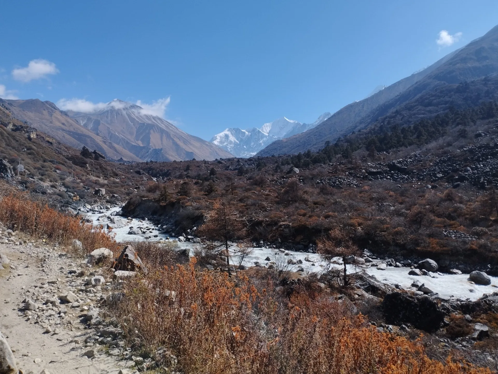
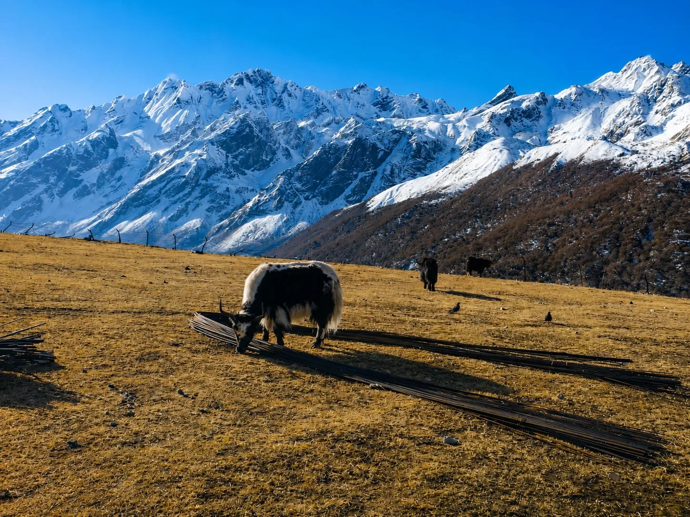
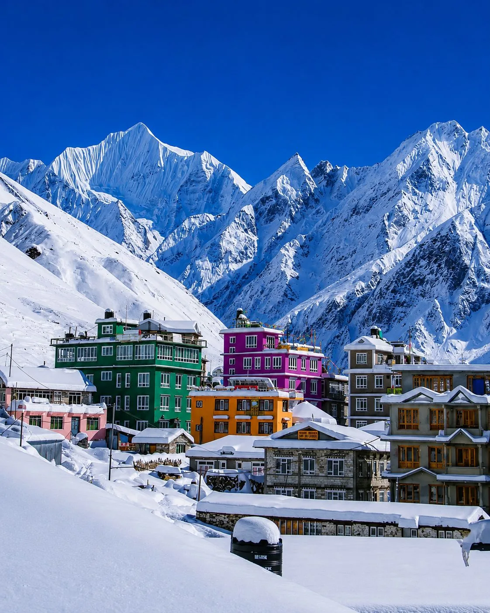

1. The Langtang Viewpoint Dilemma: Kyanjin Ri vs. Tserko Ri Overview

Trekking the Langtang Valley is one of Nepal’s most rewarding adventures, carrying hikers from the subtropical bamboo river gorges of Syabrubesi to the wide, glaciated amphitheater of Kyanjin Gompa (3,870m / 12,697ft). Nestled directly beneath the hanging ice seracs of Mount Langtang Lirung (7,227m), Kyanjin Gompa is the spiritual and geographical terminus of the classic trek.
However, the real crown of the journey is not merely reaching the village—it is ascending one of the two legendary panoramic viewpoints that rise on opposite sides of the valley: Kyanjin Ri (4,773m) and Tserko Ri (4,984m / 5,033m).
Both peaks provide jaw-dropping Himalayan vistas, yet they demand vastly different commitments in physical stamina, time, and mountaineering mindset:
- Kyanjin Ri: The accessible, scenic ridge rising straight out of the village’s backyard. It offers an incredible half-day adventure with intimate, dramatic birds-eye views looking down into Kyanjin Gompa and straight into the snout of the Langtang Lirung Glacier.
- Tserko Ri (Cherko Ri): A formidable, full-day alpine test. It involves crossing the valley floor, ascending through high yak pastures, and grinding up steep boulder scree and talus to break the 5,000-meter barrier, rewarding climbers with an unparalleled 360-degree trans-Himalayan panorama stretching into Tibet.
2. Side-by-Side Comparison Matrix: Key Metrics at a Glance
To help you weigh the physical demands, timing, and visual rewards of each climb, our senior Langtang mountain guides have compiled this head-to-head comparison matrix:
| Viewpoint Metric | Kyanjin Ri (Upper Peak) | Tserko Ri (Cherko Ri) |
|---|---|---|
| Summit Elevation | 4,773m / 15,659ft (Lower Peak: 4,300m) | 4,984m / 16,351ft (Often cited as 5,033m) |
| Vertical Elevation Gain | +903m (+430m to Lower Peak) | +1,114m (+3,654 vertical feet) |
| Round-Trip Duration | 3 to 5 Hours | 7 to 9 Hours |
| Total Trail Distance | Approx. 5 km (3.1 miles) round trip | Approx. 12 km (7.5 miles) round trip |
| Starting Departure Time | 7:00 AM – 8:00 AM (After warm breakfast) | 4:30 AM – 5:00 AM (Pre-dawn headlamp start) |
| Trail Difficulty Level | Moderate to Demanding steep hill climb | Strenuous / Alpine Endurance |
| Terrain & Footing | Packed dirt path, grassy switchbacks, rocky ridge crest | Valley crossing, steep shale, loose scree, giant boulder fields |
| Water & Food on Trail | None (Carry 1.5L water & light snacks) | None (Carry 2.5L–3.0L insulated water & packed lunch) |
| Navigation & Guide Need | Straightforward path; easily visible from village | Complex boulder fields; guide highly recommended |
| Primary Mountain Vista | Langtang Lirung icefall, glacier lake, village birds-eye | 360° panorama: Dorje Lakpa, Yala Peak, Shishapangma (Tibet) |
3. Kyanjin Ri Deep-Dive (4,773m): Route Breakdown, Lower Peak vs. Upper Peak

Kyanjin Ri is the beloved classic hike of the Langtang Valley. Rising directly behind the northern stone lodges of Kyanjin Gompa, the trail starts right beside the old Yak Cheese Factory. There are no river crossings or long valley traverses—you begin gaining elevation immediately.
Lower Kyanjin Ri (4,300m / 14,107ft): The 2-Hour Milestone
The first stage of the climb ascends a steep, zigzagging grassy ridge marked by dwarf rhododendron and juniper bushes. Within 90 minutes to 2 hours of steady pacing, you reach the Lower Peak (4,300m), marked by a massive, colorful cluster of Buddhist prayer flags fluttering in the alpine wind.
For many trekkers—especially families, older hikers, or those feeling the initial effects of altitude—Lower Kyanjin Ri is the perfect turnaround point. From here, you enjoy an astonishing birds-eye view looking directly down onto the tin-roofed lodges of Kyanjin Gompa, the old airstrip, and the turquoise glacial lake pooling at the foot of Langtang Lirung.
Upper Kyanjin Ri (4,773m / 15,659ft): The True Summit Knife-Edge
If your legs feel strong and your breathing is steady, continuing to Upper Kyanjin Ri (4,773m) takes another 60 to 90 minutes. The trail follows an undulating, dramatic knife-edge ridge with steep drop-offs on the northern glacier flank. As you crest the true summit cairn, you are rewarded with an unobstructed view directly into the thundering seracs and hanging ice walls of Mount Langtang Lirung (7,227m) and Kimshung (6,781m).
The descent follows the same ridge, taking roughly 1 to 1.5 hours. By 11:30 AM or noon, you are back in Kyanjin Gompa relaxing in a sunny bakery with fresh coffee and warm apple pie!
4. Tserko Ri Deep-Dive (4,984m): The 5,000-Meter High-Alpine Crucible
While Kyanjin Ri is an enjoyable morning ridge hike, Tserko Ri (4,984m / 16,351ft) is a serious high-altitude mountain expedition. Reaching its summit requires climbing over 1,100 vertical meters across 12 kilometers of rugged wilderness, pushing your body right to the edge of the 5,000-meter barrier.
The 4:30 AM Alpine Departure
A successful ascent of Tserko Ri begins in total darkness. Trekkers wake at 4:00 AM, eat a quick breakfast of porridge or eggs, strap on headlamps, and depart into the sub-zero chill by 4:30 AM. Leaving early is vital for two reasons: avoiding afternoon thermal clouds that obscure summit views, and completing the treacherous boulder descent before dusk.
Stage-by-Stage Route Anatomy
- The Valley Floor & River Crossing (30 mins): The trail heads eastward down the valley floor, crossing the rushing Langtang Khola via a wooden footbridge before turning northward toward the slopes of Tserko Ri.
- Yala Kharka Pastures (1.5 hours): The trail climbs steadily through the terraced seasonal yak pastures of Yala Kharka. The sun rises over the eastern peaks, illuminating Dorje Lakpa in brilliant pink alpenglow.
- The Scree Switchbacks (2.5 hours): Above the pastures, vegetation disappears. You enter a punishing section of steep, dusty switchbacks on loose shale and gravel. Breathing becomes labored as oxygen levels drop to nearly half of sea level.
- The False Summit & The Boulder Field (1.5 hours): As you reach a prayer-flagged ridge, you think you have reached the summit—only to discover the infamous "False Summit"! Ahead lies the most technically demanding section: an undulating labyrinth of giant granite boulders and frost-shattered talus that requires two-handed scrambling and careful balance.
- The True Summit Cairn (4,984m): Scrambling past the final snow crest brings you to the true summit cairn festooned with weathered lungta prayer flags. The sensation of standing atop this isolated vantage point is euphoric—an authentic mountaineering achievement on a trekking route.
The Inflexible 11:30 AM Turnaround Rule
Professional guides enforce a strict turnaround time on Tserko Ri: If you have not reached the summit by 11:30 AM, you must turn around regardless of your proximity. Weather deteriorates rapidly after midday in the high Himalayas, and descending through the chaotic boulder field in dense fog, freezing rain, or darkness is hazardous.
5. Mountain Panoramas & Visual Aesthetics: Glacial Proximity vs. 360° Trans-Himalayan Scope

Both peaks deliver world-class mountain panoramas, but their perspectives are dramatically distinct:
Kyanjin Ri: Intimate Glacial Drama
The Visual Identity: Verticality and dramatic proximity. Because Kyanjin Ri sits directly on the northern flank of the valley, you feel as though you can reach out and touch the lateral moraines of Langtang Lirung (7,227m).
Key Sights: Looking down, Kyanjin Gompa appears like a tiny, colorful toy village nestled between giant moraine walls. You stare straight into the cracked blue seracs, avalanche gullies, and icefall meltwater lakes of the Lirung Glacier. Looking west, the pyramid of Changbu and the Langtang valley gorge stretch endlessly toward the horizon.
Tserko Ri: Complete 360° Trans-Himalayan Horizon
The Visual Identity: Vast, panoramic isolation. Because Tserko Ri stands like an isolated sentinel pyramid in the center of the upper valley, it provides an unobstructed 360-degree circular horizon that Kyanjin Ri cannot match.
Key Sights: You gaze upon the entire Langtang massif: Langtang Lirung, Langtang II (6,596m), the fluted ice face of Gangchempo (6,387m), the elegant spire of Dorje Lakpa (6,966m), Morimoto Peak, and climbing neighbor Yala Peak (5,520m). On crystal-clear mornings, you can gaze north across the Tibetan frontier to witness the snowy apex of Shishapangma (8,027m)—the 14th highest mountain on Earth!
6. Physical Demands & Fitness Requirements: Half-Day Scramble vs. Full-Day Endurance Push
Understanding the physiological energy expenditure of each viewpoint ensures you choose the climb that matches your conditioning and recovery needs.
Caloric Burn and Muscular Strain
- Kyanjin Ri (Lower to Upper Peak): Total energy burn is roughly 1,500 to 2,000 calories. The climb involves steady aerobic effort on steep grassy slopes. While you will breathe heavily, the climb is over quickly, and the 1.5-hour descent leaves your quadriceps and knees relatively fresh for the return trek down the valley.
- Tserko Ri: Total energy burn reaches 3,500 to 4,500 calories. You will spend 7 to 9 hours performing continuous cardiovascular output at altitudes where atmospheric pressure is only 53% of sea level. The 1,114-meter descent over loose scree and giant granite boulders exerts brutal eccentric force on your knees, calves, and lower back.
Self-Assessment Checklist Before Attempting Tserko Ri
Before committing to the 4:30 AM departure for Tserko Ri, ask yourself these honest questions:
- Did you sleep well and wake up completely free of headaches or nausea at Kyanjin Gompa?
- Have you previously hiked for 7+ hours with a loaded daypack on uneven mountain terrain?
- Are your knees and joints comfortable descending 1,100 vertical meters of loose rock?
- Are your trekking boots thoroughly broken in with zero active blisters?
If you answered "no" to any of these, climbing Kyanjin Ri is the far safer, more enjoyable choice.
7. Trail Terrain, Hazards & Technical Footing: Grassy Ridges vs. Boulder Scree & Talus
The ground beneath your boots changes dramatically between the two peaks. Proper foot placement and balance are essential for injury prevention.
Kyanjin Ri: Consistent Soil and Grassy Switchbacks
The trail up Kyanjin Ri is well-defined and heavily trodden by local yak herders and trekkers:
- Lower Section: Compact mountain soil, occasional stone steps, and grassy switchbacks. While steep, footing is predictable and secure in dry conditions.
- Upper Ridge: The trail narrows along the knife-edge crest. There is light exposed rock and some loose gravel, but hands-on scrambling is rarely necessary. If wet from rain or morning frost, the grass can be slippery.
Tserko Ri: High Alpine Talus, Frost Heave & Granite Boulders
Tserko Ri presents a much more technical walking challenge:
- Lower Valley & Pastures: Grassy trails with muddy sections near stream crossings. Morning frost can make wooden bridges slick.
- Mid-Mountain Scree: Steep, loose scree where you slide backward half a step for every two steps forward. Trekking poles with mud baskets are essential for traction.
- Upper Boulder Field: The crux of the hike. The final 300 vertical meters require navigating giant granite blocks (some the size of small cars). You must step from rock to rock, test stones for stability, and occasionally scramble on all fours. Cold rocks demand windproof, grippy gloves to protect hands.
8. Altitude Exposure & Acclimatization Safety: Managing the 5,000m Barrier Safely

The difference between 4,773m and 4,984m may look small on paper, but in high-altitude human physiology, breaking the 5,000-meter barrier places immense stress on the respiratory and circulatory systems.
Effective Oxygen Comparison
| Location | Altitude | Effective Oxygen vs Sea Level | Typical Physiological Response |
|---|---|---|---|
| Kyanjin Gompa Village | 3,870m / 12,697ft | ~63% | Mild shortness of breath on stairs; manageable sleep. |
| Lower Kyanjin Ri | 4,300m / 14,107ft | ~59% | Elevated heart rate; deep breathing on switchbacks. |
| Upper Kyanjin Ri | 4,773m / 15,659ft | ~55% | Noticeable hyperventilation; mild fatigue; cold wind chill. |
| Tserko Ri Summit | 4,984m / 16,351ft | ~53% | Significant oxygen deficit; heavy legs; high vulnerability to AMS. |
The Acclimatization Golden Rule: Climb High, Sleep Low
Both Kyanjin Ri and Tserko Ri serve as fantastic examples of the mountaineering principle "Climb High, Sleep Low". Because you climb up to 4,700m or nearly 5,000m during the day and return to sleep at 3,870m in Kyanjin Gompa, your body receives a powerful stimulus to produce more red blood cells without the extreme hypoxia of sleeping at altitude.
9. Seasonal Considerations & Snow Conditions: Autumn Clarity vs. Spring Rhododendrons
Timing your Langtang trek dictates trail conditions, summit snow cover, and mountain visibility.
Autumn (October to November): The Undisputed Golden Window
- The Conditions: Clear skies, minimal rain, and diamond-sharp visibility exceeding 80 kilometers. Both Kyanjin Ri and Tserko Ri are generally free of deep snowdrifts by mid-October.
- Trail Feel: Dry, firm trails on both peaks. Daytime temperatures in Kyanjin Gompa hover around 10°C to 14°C, dropping to 0°C to -5°C at the summits with chilly morning winds.
- Verdict: Autumn is the best season for attempting Tserko Ri, as the upper boulder field is dry and non-technical.
Spring (March to May): Blooming Forests & Lingering High Snow
- The Conditions: Warmer days with stunning scarlet, pink, and white rhododendrons blooming along the river trail from Bamboo to Ghodatabela.
- Snow Realities: Winter snowpack lingers in the upper valley through late April. While Kyanjin Ri is typically clear or has only light snow patches, Tserko Ri often retains knee-deep snow and hidden ice traps between the upper boulders. Microspikes and gaiters are mandatory in March and early April.
- Cloud Cycles: Convective afternoon clouds roll into the valley earlier in spring (often by 11:00 AM), making a 4:30 AM alpine start on Tserko Ri absolutely essential.
10. Gear & Equipment Essentials: Daypack Checklist, Microspikes & Layering
Because you return to your teahouse in Kyanjin Gompa after both hikes, you leave your heavy duffel bag in your room and carry only a 25L to 30L technical daypack weighing 4 to 6 kilograms.
| Gear Category | Essential Items for Kyanjin Ri & Tserko Ri | Tactical Field Purpose |
|---|---|---|
| Clothing Layering |
• Merino wool base layer top (200 gsm) • Mid-layer grid fleece jacket • Packable down jacket (700+ fill power) • Gore-Tex windproof/waterproof shell jacket • Thermal beanie & fleece buff / neck gaiter • Windstopper gloves with leather palm grip |
Start cold with fleece and shell; put on down jacket immediately upon reaching the windy summit. |
| Footwear & Traction |
• High-cut waterproof trekking boots (Vibram soles) • Kahtoola MICROspikes (indispensable for Tserko Ri in spring) • Sturdy trekking poles with rubber tips and mud baskets • Ankle gaiters (spring snow protection) |
Poles reduce knee impact by up to 25% on the steep 1,100m descent from Tserko Ri. |
| Optics & Sun Care |
• Category 3 or 4 UV glacier sunglasses • Broad-spectrum SPF 50 sunscreen & SPF 30 lip balm • Wide-brim sun hat |
Glacial reflection at 4,800m causes severe corneal sunburn (snow blindness) without UV eyewear. |
| Hardware & Electronics |
• 300+ lumen headlamp with fresh lithium batteries (crucial for 4:30 AM start) • 10,000 mAh compact power bank (keep in warm pocket) • Offline GPS map (Maps.me or Gaia GPS on smartphone) |
Sub-zero pre-dawn air rapidly drains smartphone camera batteries without a warm pocket. |
11. Fueling the Climb: Nutrition, Caloric Needs & Safe Hydration Strategies
Climbing above 4,500 meters burns calories at an accelerated rate while suppressing natural appetite. Proper nutrition and hydration are critical to avoiding summit bonking.
Pre-Climb Fueling the Night Before
Order a large, piping-hot plate of traditional Dal Bhat Tarkari at your Kyanjin Gompa lodge the evening before your climb. The complex carbohydrates from steamed rice, iron-rich lentil soup, and electrolyte-heavy curried vegetables provide long-burning glycogen reserves. Wash it down with a bowl of garlic soup, renowned by locals for aiding altitude acclimatization and blood flow.
Morning Breakfast and Trail Snacks
- Pre-Dawn Breakfast: Eat warm porridge with honey and raisins, boiled eggs, or Tibetan bread with peanut butter before stepping out into the cold. Avoid heavy fried meats or greasy dishes.
- High-Energy Trail Rations: Pack calorie-dense, easy-to-chew snacks: Snickers bars, flapjacks, trail mix (almonds, cashews, raisins), and energy gels. At 4,800m in freezing wind, hard protein bars freeze solid like bricks—keep them in your inside jacket pocket to stay soft!
Safe Hydration on Trail
There are zero water taps or streams on either summit trail. Trekkers must carry:
- Kyanjin Ri: Minimum 1.5 to 2.0 liters of purified water.
- Tserko Ri: Minimum 2.5 to 3.0 liters of water, with at least 1 liter stored in an insulated thermos as hot ginger lemon tea.
- Avoid Hydration Bladders: Water in exposed external backpack drinking hoses freezes solid within 30 minutes in pre-dawn temperatures. Use wide-mouth Nalgene bottles with thermal sleeves instead.
12. The 'Do Both' Strategy: How to Combine Both Viewpoints in a Single Itinerary

If you have flexibility in your travel schedule, you don’t have to choose between Kyanjin Ri and Tserko Ri. You can do both!
By scheduling three nights in Kyanjin Gompa (two full exploration days), you can experience the scenic drama of Kyanjin Ri and the alpine triumph of Tserko Ri back-to-back.
The Perfect 9-Day Master Schedule
| Day | Stage & Key Activity | Altitude | Tactical Purpose |
|---|---|---|---|
| Day 01 | Drive Kathmandu to Syabrubesi via Dhunche | 1,460m / 4,790ft | Overland transit (6–7h scenic drive). |
| Day 02 | Trek Syabrubesi to Lama Hotel | 2,480m / 8,136ft | Ascend lush bamboo river gorge (+1,020m gain). |
| Day 03 | Trek Lama Hotel to Langtang Village | 3,430m / 11,253ft | Pass Ghodatabela; enter the open alpine valley. |
| Day 04 | Trek Langtang Village to Kyanjin Gompa | 3,870m / 12,697ft | Gentle 3-hour morning hike; afternoon rest & cheese factory visit. |
| Day 05 | Climb Kyanjin Ri (4,773m) | 4,773m / 15,659ft | Active Acclimatization Climb: 4h round trip; afternoon rest. |
| Day 06 | Climb Tserko Ri (4,984m) | 4,984m / 16,351ft | Summit Expedition Push: 8h alpine challenge with primed lungs! |
| Day 07 | Trek Kyanjin Gompa down to Lama Hotel | 2,480m / 8,136ft | Rapid, easy downhill recovery descent (-1,390m drop). |
| Day 08 | Trek Lama Hotel down to Syabrubesi | 1,460m / 4,790ft | Final trail morning; celebrate with hot shower & dal bhat. |
| Day 09 | Drive Syabrubesi back to Kathmandu | 1,400m / 4,593ft | Scenic drive back to capital; transfer to hotel. |
Why the Progression Works Flawlessly
Climbing Kyanjin Ri on Day 5 serves as the ultimate physiological dress rehearsal for Tserko Ri on Day 6. Reaching 4,773m triggers your body to produce more red blood cells and tests your layering system. When you wake up at 4:30 AM the next morning to tackle Tserko Ri, your cardiovascular system is already acclimatized, dramatically increasing your summit success rate!
13. Alternative Explorations from Kyanjin Gompa: Langshisha Kharka & Langtang Base Camp
What if you have knee injuries, suffer from vertigo, or simply prefer walking flat glacial valleys rather than grinding up steep summit ridges? Kyanjin Gompa offers wonderful alternative day hikes:
Option 1: Langshisha Kharka Valley Trek (4,100m)
The Flat Glacial Highway: Instead of climbing up, you walk east along the wide, flat glacial river basin toward the Tibetan frontier.
The Experience: A 7 to 8-hour round-trip hike (approx. 20 km) across open yak pastures, glacial braided streams, and pristine wilderness. You are surrounded by towering walls of Langshisha Ri (6,427m) and Dorje Lakpa. You rarely encounter other hikers, making it a peaceful sanctuary of absolute solitude.
Option 2: Langtang Lirung Base Camp & Glacier Walk
The Intimate Glacier Stroll: A shorter, gentler 3 to 4-hour morning hike leading to the terminal moraine of Mount Langtang Lirung.
The Experience: You sit beside a milky turquoise meltwater lake, listening to the thunderous roars of serac avalanches crashing down the sheer 3,000-meter north-facing ice gullies. It provides an intense glacial experience without the punishing vertical gain of a summit climb.
14. Kyanjin Gompa Base Camp Life: Yak Cheese Factory, Bakeries & Monastery Culture

A huge part of the magic of climbing either viewpoint is returning to the warm, vibrant mountain culture of Kyanjin Gompa village. Inhabited primarily by Tamang and Tibetan-descended highland communities, the village is a thriving alpine hub with unique mountain institutions:
The Historic Government Yak Cheese Factory
Established in 1955 with the technical assistance of the Swiss Association for Technical Assistance (SATA), the Kyanjin Yak Cheese Factory is one of the oldest in Nepal. Every morning during summer and autumn, local herders bring fresh yak milk from high pastures. Trekkers can tour the stone curing rooms and buy fresh, nutty, golden wheels of organic yak cheese right from the master cheesemakers!
The German Bakeries of the Himalayas
Kyanjin Gompa is world-famous for its high-altitude bakery culture. After descending from Kyanjin Ri or Tserko Ri, nothing on earth tastes better than a warm slice of fresh apple crumble, a cinnamon roll, or a chocolate brownie served alongside real Italian espresso or hot ginger lemon tea.
Kyanjin Gompa Monastery
At the center of the settlement stands the ancient Buddhist monastery (gompa) that gives the village its name. Draped in fluttering prayer flags and surrounded by stone Mani walls carved with sacred mantras, the monastery is a peaceful spiritual haven where local lamas perform morning puja prayers.
15. The Final Verdict: Which Viewpoint Should You Choose for Your Adventure?
When standing in the warm dining hall of your teahouse in Kyanjin Gompa examining your map, here is how to make your final, definitive choice:
Choose Kyanjin Ri (4,773m) If:
- You prefer a half-day adventure (3 to 5 hours) that leaves you relaxed with an entire afternoon to explore the village and cheese factory.
- You want a dramatic birds-eye view looking directly down onto Kyanjin Gompa and the chaotic icefall of Mount Langtang Lirung.
- You are feeling mild effects of altitude, want to protect your knees from severe descent impacts, or are hiking with family.
- You only have a single night in Kyanjin Gompa on a tight 7-day trekking schedule.
Choose Tserko Ri (4,984m) If:
- You want the thrill and bragging rights of conquering a genuine 5,000-meter Himalayan summit on a trekking itinerary.
- You want the ultimate 360-degree circular panorama encompassing Langtang Lirung, Dorje Lakpa, Yala Peak, Gangchempo, and the Tibetan 8,000m giant Shishapangma.
- You have strong cardiovascular fitness, relish the adventure of pre-dawn headlamp starts, and enjoy boulder scrambling.
- You have dedicated two or more nights in Kyanjin Gompa and want an unforgettable high-altitude challenge.
Frequently Asked Questions (FAQ) About Kyanjin Ri vs. Tserko Ri
Select a category below to explore expert answers to the most common questions travelers ask about Kyanjin Ri vs. Tserko Ri:
Difficulty & Fitness

Ready to Experience the Himalayas?
Whether you are preparing for high-altitude trekking, cultural circuits, or alpine summit expeditions, start planning a bespoke journey tailored to your fitness, travel season, and style.